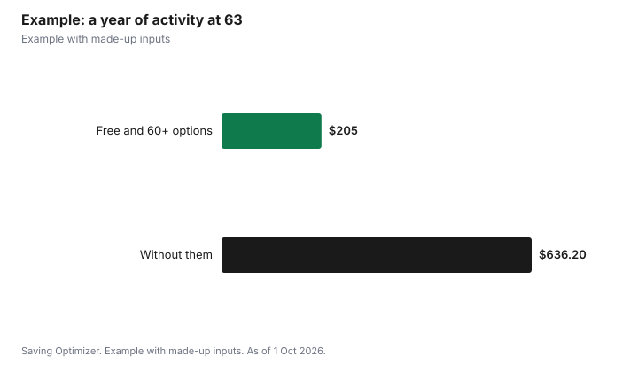

Sports · Canada
Sports for Adults 55+ in Canada: Games, Free Skating and Discounts

Adults 55 and older in Canada can stay active for little or no money by starting with free city drop-ins and adding organized sport later. In Toronto, for example, all drop-in skating is free, leisure swim is free at every pool, lane swim for older adults (60+) is free, and adults 60 and older get 50% off registered adult programs. If you want competition, the Ontario 55+ Games and the 55+ BC Games are provincial events for older adults, and you enter through a local district or zone. In BC, the listed fees include a $20 membership and $100 participant registration, plus a sport fee such as $30 for pickleball. Check your own city's recreation guide, because senior ages, discounts and free programs differ by municipality.
Key takeaways
- Toronto: free drop-in skating, free leisure swim and free older adult (60+) lane swim.
- Toronto: 60+ get 50% off registered adult programs, excluding private and small group lessons.
- Ontario 55+ Games: Summer in odd years, Winter in even years; you start at a local district.
- 55+ BC Games: $20 membership, $100 participant registration, plus a sport fee.
- Ages differ: some programs start at 55, others at 60 or 65.
- Example with made-up inputs: a year of activity for under $300.
Free and discounted city programs
Municipal recreation is usually the cheapest place to start. Toronto is a useful example because its rules are published clearly, but other cities run similar programs under different names and ages.
| Program | Cost for older adults | Notes |
|---|---|---|
| Drop-in leisure skating | Free | All drop-in skating programs are free; Older Adult sessions are for 60+ |
| Leisure swim | Free | Free at all indoor and outdoor pools |
| Older Adult lane swim (60+) | Free | Adult indoor lane swim otherwise has a fee |
| 10-visit lane swim pass | $20.90 for 60+, $41.38 for adults | Before tax |
| Registered adult programs | 50% off for 60+ | Private, semi-private and small group lessons excluded |
| Free centres | Free registered programs | Registration still required |
Toronto says older adults who register for adult programs get a 50% discount, and that free centres were set up to remove program fees in neighbourhoods with high levels of low income; you still register and check out online. If you live elsewhere, search your city's site for older adult, senior or 55+ programs, and ask about fee assistance, since many municipalities have subsidy programs for low-income residents.
The Ontario 55+ Games
Ontario's guide to programs for seniors describes the Ontario 55+ Games as provincial competitions for older adults delivered by Games Ontario. Sports include badminton, curling, darts, hockey, pickleball, swimming and walking. The Summer Games are held in odd years and the Winter Games in even years. Participation begins at a local district of the Ontario Senior Games Association, which also runs district and regional games. Games Ontario lists Orillia as host of the 2028 Ontario 55+ Winter Games, with dates to be announced. The 2028 Summer Games host was listed as to be announced; no 2027 Summer Games host or dates appeared on that page as of 1 October 2026, so ask your district for the current schedule and qualifying events.
The 55+ BC Games
In British Columbia, the 55+ BC Games run through regional zones. Its fees at a glance, as listed on its site, are a $20 membership and $100 participant registration, plus a fee for each sport. Fees are shown for the most recent Games and could change for the next one.
| Item | Fee |
|---|---|
| Membership | $20 |
| Participant registration | $100 |
| Supporter registration | $50 |
| Pickleball | $30 |
| Hockey | $30 |
| Ice curling | $25 |
| Swimming | $15 |
| Tennis | $15 |
| Cycling | $60 |
| Golf | $143 |
Other provinces have their own senior games organizations. Search for your province's 55+ or senior games association to find local clubs and qualifying events.
Popular low-cost sports after 55
- Walking groups: usually free to join; ask your community centre, library or Seniors Active Living Centre program about groups near you.
- Pickleball: drop-in play at community centres is often inexpensive; see the related pickleball guide for paddle and court costs.
- Swimming and aquafit: lane swim and leisure swim are free for older adults in Toronto; aquafit is often a registered program, where the 60+ discount may apply.
- Curling: many clubs offer daytime or senior leagues; see the related curling guide.
- Skating: free drop-in sessions where available; see the related adult skating guide for lessons.
- Golf: senior rates and weekday twilight rates vary by course; ask when booking.
Tax credits and health
Only a few provinces still offer a tax credit for sports and fitness fees, and some apply only to children or young adults, so read the related guide on adult physical activity credits before counting on one. Keep receipts for registered programs either way. Before starting a new activity, Ontario's seniors guide points older adults to community recreation and Seniors Active Living Centre programs, many of which run gentle exercise classes. If you have a heart condition or other health concern, talk to your health care provider about the right intensity.
Example with made-up inputs
These numbers are an example with made-up inputs. Linda, 63, lives in Toronto. She swims older adult lane swim twice a week (free), skates at drop-in sessions in winter (free), and registers for a made-up $160 pickleball program, which costs $80 after the 60+ discount. She also joins her local senior games district for a made-up $25 and pays a made-up $40 to enter a regional event, plus $60 for a used paddle and shoes. Her year costs $205. Without free swims and the discount, at $4.39 per lane swim day pass for 80 swims, plus the full program price, she would pay $351.20 plus $160 plus $125, or $636.20.
| Item | Using free and 60+ options | Without them |
|---|---|---|
| 80 lane swims | $0 | $351.20 |
| Pickleball program | $80 | $160 |
| Senior games district and event | $65 | $65 |
| Paddle and shoes | $60 | $60 |
| Total | $205 | $636.20 |

Steps
- Look up your city's older adult programs and the age they start.
- Try free drop-ins first to find a sport you enjoy.
- Register for a program where the senior discount applies.
- Contact your local senior games district or zone if you want competition.
- Ask about fee assistance if cost is a barrier.
- Check whether your province has an adult activity tax credit and keep receipts.
Common mistakes
- Paying adult rates without asking about older adult discounts.
- Assuming every city uses 60 as the senior age.
- Waiting for provincial games when district events run all year.
- Buying new gear before trying a sport.
Related: pickleball costs and city recreation fee assistance.
Sources
- Government of Ontario, A guide to programs and services for seniors: Active living, ontario.ca, as of 1 Oct 2026.
- Government of Ontario, Games Ontario (updated 14 Apr 2026), ontario.ca, as of 1 Oct 2026.
- 55+ BC Games, Fees at a glance, 55plusbcgames.org, as of 1 Oct 2026.
- City of Toronto, Drop-in Skating; Drop-in Swimming; Free and Lower-Cost Recreation Options, toronto.ca, as of 1 Oct 2026.
- Program prices other than Toronto's lane swim fee are made-up inputs in the example.
Frequently asked questions
Is skating free for seniors in Toronto?
Yes. All City of Toronto drop-in skating programs are free, and some sessions are for older adults 60 and up.
Is lane swimming free for seniors in Toronto?
Yes. Older adult (60+) lane swim is free, and leisure swim is free at all pools.
What discount do seniors get on Toronto recreation programs?
Older adults 60 and up get 50% off registered adult programs. Private, semi-private and small group lessons are excluded.
How do I join the Ontario 55+ Games?
Start with your local district of the Ontario Senior Games Association. The Summer Games are in odd years and the Winter Games in even years.
How much does it cost to enter the 55+ BC Games?
Fees listed on its site include a $20 membership and $100 participant registration, plus a sport fee such as $30 for pickleball.
Where are the next Ontario 55+ Winter Games?
Games Ontario lists Orillia as host of the 2028 Ontario 55+ Winter Games, with dates to be announced.
Researched and drafted with AI assistance and fact-checked against official Canadian sources. How we create content.
Disclosure: Saving Optimizer may earn a commission if a partner link is added later. No partnership is claimed on this page. Education only.